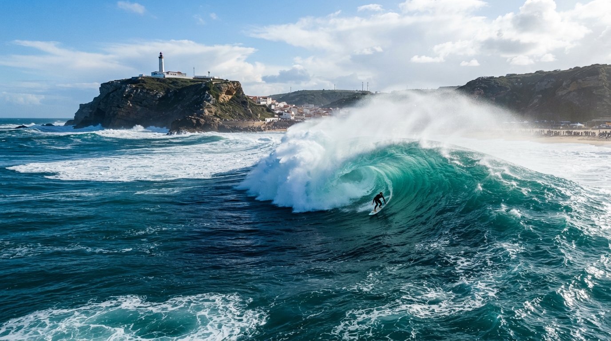

“Oggi marea ideale dalle 10 alle 13. Attenzione alla secca a sinistra con la bassa marea. Portate la muta 4/3!”
Webcam dal vivo

LIVE CAM - Onde attuali
CAM #01
SEGNAPOSTO: LIVE STREAM WEBCAM
videocam
Nazaré - Praia do Norte
Aggiornato 4 min fa
Condizioni Spot & Meteo
Dati liveFeedback Surfisti della Community
2 Nuovi“Line-up pulito questa mattina, picco costante e onde morbide sulla spalla destra. Consigliata tavola 6'6 per divertirsi.”
“Goditi ogni istante”
Rispetta le precedenze in mare, controlla la corrente prima di entrare e vivi il viaggio al massimo.